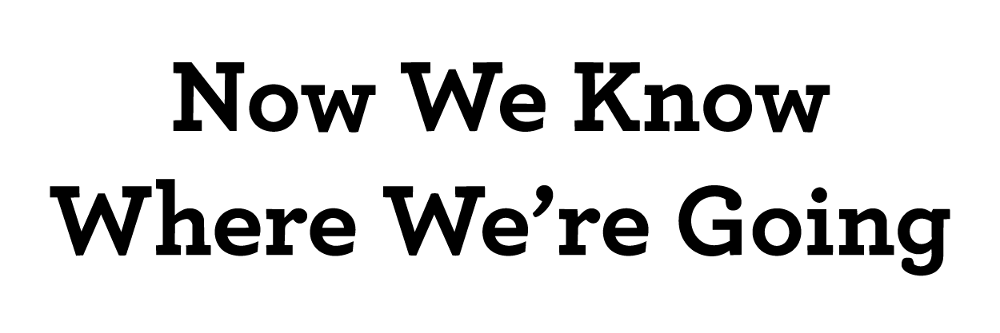

Video Campaign

A sustainability video campaign — short, deadpan how-tos and promos that make everyday eco-swaps worth watching. The moving-image counterpart to the climate zine of the same name.
Video Campaign

A sustainability video campaign — short, deadpan how-tos and promos that make everyday eco-swaps worth watching. The moving-image counterpart to the climate zine of the same name.
Short-form sustainability promo · 0:43
A punchy eco-pitch for wool dryer balls versus disposable sheets, cut to Manu Chao’s “King of Bongo,” with an on-camera demo, stat captions, and deadpan humor.
Maker / product-design build · 0:40
A captioned time-lapse building a functional cantilever chair out of skateboard decks — bolt, cut the tongue, drill, assemble, “Sit!”
Sustainability how-to · 1:17
An instructional guide to lasagna-method composting — weeds, leaves, and dead plants, dug in and mulched, then six months’ wait — shot with shallow-depth-of-field outdoor cinematography.
The work shown here is student work, created for educational purposes as part of academic coursework — not for commercial use. It may include third-party material (music, footage, or imagery) used under the fair-use provisions of U.S. copyright law (17 U.S.C. § 107) for purposes such as criticism, commentary, teaching, and scholarship. No copyright infringement is intended and no commercial gain is derived from this work. Rights holders with any concerns may contact jackwardmurray@gmail.com.